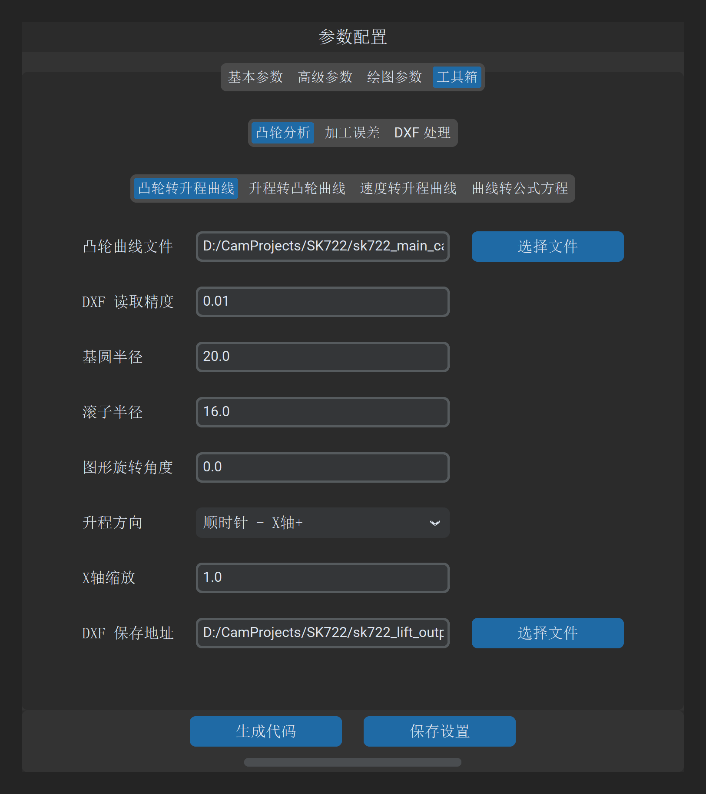
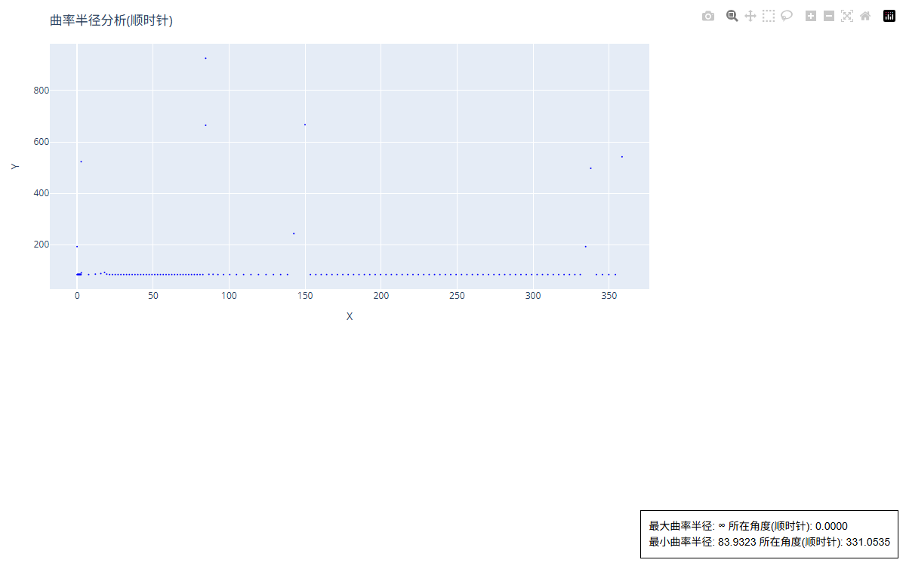

凸轮转升程曲线
“凸轮转升程曲线”工具用于从既有的凸轮 DXF 轮廓中，反求从动件在各转角下的升程（Lift）、速度（Velocity）、加速度（Acceleration）以及轮廓表面的曲率半径（Curvature Radius），并自动生成适用于克林伯格（Klingelnberg P65）等凸轮测量仪的升程对齐文件。
1. 操作界面与参数布局
打开主界面并切换至 工具 -> 凸轮分析 -> 凸轮转升程曲线：

2. 参数定义与配置说明
| 参数项 | 字段标识 | 推荐设置 | 详细说明与工程含义 |
|---|---|---|---|
| 凸轮曲线文件 | curve_dxf_file_path |
必填 | 待分析的既有凸轮 DXF 闭合轮廓文件路径 |
| 基圆半径 | base_circle_radius |
20.0 |
凸轮设计基圆半径（）。软件以该基圆为零位基准，求取向外的绝对/相对升程 |
| 滚子半径 | roller_radius |
0.0 |
测量杆探针或机构滚子半径（）。 • 若输入凸轮实际轮廓且探针为对心尖顶或微小球面测头，设为 0；• 若分析配对摆臂滚子运动，输入滚子实际半径进行接触反包络求解 |
| 升程方向 | lift_direction |
顺时针 | 极坐标展开计算的方向（顺时针 / 逆时针）。外圆磨削通常沿顺时针推进，建议保持顺时针 |
| 原始升程X轴缩放 | original_lift_curve_x_axis_scale |
1.0 |
生成的 HTML 交互图表中横坐标缩放倍数，便于展开观察微小升程 |
3. 数学解算与物理判据
系统在极坐标离散网格上对轮廓位置矢量 进行高阶样条重构与数值微分：
3.1 运动学微分
- 平滑度校验：速度曲线 和加速度曲线 的连续性直接反映了凸轮传动的动力学品质。
- 若出现尖峰或跳变，表明原始 DXF 轮廓存在微小的折角或离散不均匀，磨削时会导致机床进给轴剧烈抖动。
3.2 轮廓曲率半径与砂轮干涉判据

[!CAUTION] 凹轮廓最小曲率半径预警
在上图所示的曲率分析曲线中，若凸轮存在内凹区域（曲率半径极小值点），该处的最小曲率半径 必须严格大于外圆磨削砂轮的半径 ： 若设定砂轮直径为 （半径 ），而工件凹部最小曲率半径仅为 ，加工时砂轮将在该处发生严重几何过切，导致凸轮报废！
4. 输出成果
点击 生成凸轮数据 后，系统在同目录下输出以下成果：
- 运动学与曲率图表（HTML）：直观展示升程、速度、加速度与全周曲率半径分布，支持鼠标多级缩放、光标探针测量；
- P65 升程文本文件（
*-distance-*.txt）：按 等角度步距输出标准升程表格，可直接导入克林伯格（Klingelnberg）、马尔（Mahr）等凸轮轴测量中心进行加工合格率检验。